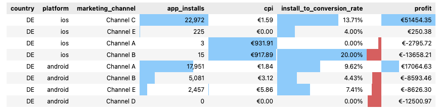
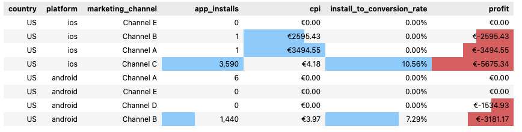
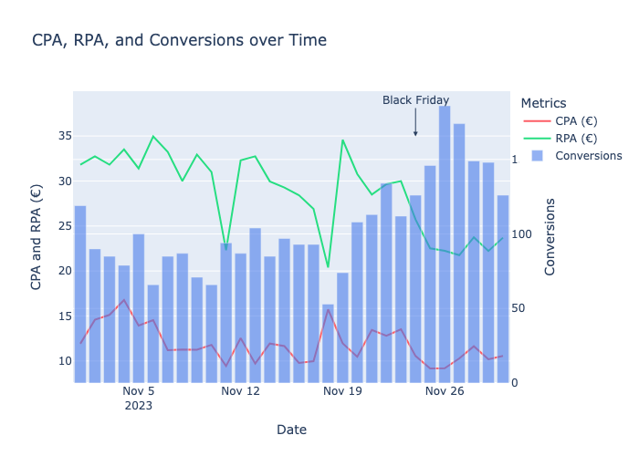
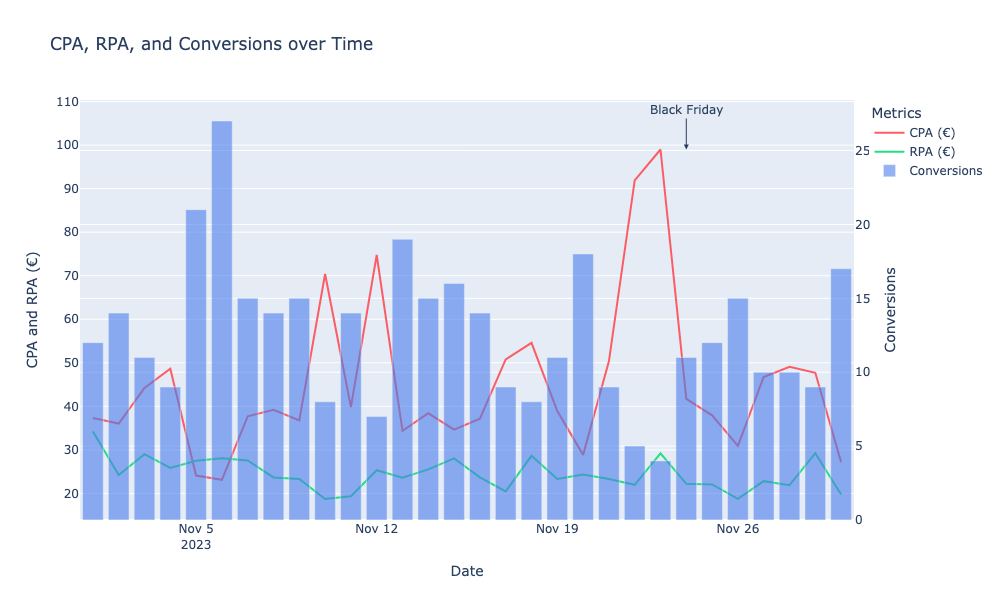

Task One - Paid Marketing Campaign Data
Introduction
Our Paid Marketing team is dedicated to engaging potential users for our app through targeted campaigns across various channels. The objective of these campaigns is to maximize app installations while maintaining a balanced consideration of financial implications. Users who sign up for a subscription within the YAZIO app count as converted. The revenue generated by subscriptions must be set against the marketing spend. You are provided with a dataset that includes campaign data for five marketing channels and multiple countries for November 2023. Our paid marketing team is interested in an analysis for two of our focus regions: Germany and the USA. Please consider 3 relevant KPIs of your choice to evaluate the performance in the past November and provide recommendations for the next November.
Key Insights and Recommendations
Germany Key Insights
- Only
Channel C (iOS)andChannel A (Android)were profitable. - Black Friday led to an increase in installs, with a higher conversion rate while CPI remained low.
- iOS generated a profit of
€35250, whereas android incurred a loss of-€12656.
Germany Recommendations
- Focus on scaling profitable channels and reassess the performance of others.
- The Black Friday strategy proved effective; use it as a benchmark for the next season.
- Work towards improving profit on Android
United States Key Insights
- No
Channelwas profitable. Channel C (iOS)has potential with good volume of installs and good conversion rate.- Black Friday saw a decline in installs, and profits remained significantly negative..
United States Recommendations
1.Prioritize channel optimization efforts.
2.Focus on reducing the cost per install for Channel C (iOS).
3.Reassess the Black Friday strategy to identify areas for improvement.
Other Insights
- A profit of €9,560 is attributed to an unknown country. It’s important to note that this might be due to data issues, and part of this profit could potentially originate from Germany or the US.
- Although the marketing team is currently focused on Germany and the US, it’s worth highlighting that economic losses in France amount to €18,806, exceeding those in the US (€16,481).
Data Analysis
KPI Selection
In evaluating the performance of paid marketing campaigns, it is crucial to consider multiple Key Performance Indicators (KPIs) to gain a holistic understanding of campaign effectiveness. Each KPI provides unique insights into different aspects of performance, allowing for a balanced approach to decision-making.
Since the objective of these campaigns is to maximize app installations while maintaining a balanced consideration of financial implications, keeping in mind the limitation to use few KPIs, I would choose: Installs, Cost Per Install (CPI), Install-to-Conversion Rate, and Profit.
- Installs reflect the volume of the campaign, showing how many users have been acquired through paid marketing efforts.
- CPI reflects the cost-efficiency of acquiring app installs, addressing the primary objective of maximizing installations while considering financial constraints.
- Install-to-Conversion Rate evaluates the quality of installs by measuring how effectively they convert into paying subscribers, ensuring that the installs generate meaningful engagement.
- Profit captures the financial outcome of campaigns, balancing revenue generation against marketing expenses to highlight overall success.
Main KPIs by platform and channel
Germany
 Insights
- Scale High-Performing Channels:
- Focus on Channel C (iOS) and Channel A (Android) for their profitability and efficiency(cpi).
-
Reassess Poor Performers:
- Investigate high CPIs in Channels A and B (iOS) and optimize spending.
- Reevaluate Channel D (Android) due to zero installs and total loss.
-
Reduce Spending on Loss-Making Channels:
- Limit investments in Channel B (Android) and Channel E (Android) due to inefficiency.
United States
 Insights
-
Scale High-Performing Channels:
- None of the channels in the USA are profitable, so there are no clear candidates for scaling at this point.
- Channel C (iOS) shows potential with the highest install volume (3,590) and a decent install-to-conversion rate (10.56%). Efforts should focus on reducing CPI (€4.18) and improving profitability.
-
Reassess Poor Performers:
- Investigate Channel B (iOS) and Channel A (iOS) due to extremely high CPIs (€2,595.43 and €3,494.55, respectively) and no conversions.
- Reevaluate Channel D (Android), which incurred a total loss (€-1,534.93) with zero installs.
- Examine Channel B (Android), which has a moderate install volume (1,440) but suffers from a loss (€-3,181.17) and a suboptimal conversion rate (7.29%).
-
Reduce Spending on Loss-Making Channels:
- Limit investments in Channels A and B (iOS) due to inefficient spending and lack of conversions.
- Deprioritize Channels D and E (Android), as they generated no meaningful results.
-
Opportunities for Improvement:
- Focus on increasing the conversion rates for Channel C (iOS) and Channel B (Android) to turn high install volumes into meaningful profit.
- Explore alternative strategies for channels that consistently underperform across both platforms.
Important to mention:
- There are €9560 of profit assigned to unknown country. Important to mention that this could be due to data problems, and part of this profit could be coming from Germany or US.
- Altough the marketing team is currently focused on DE and US, it is important to mention the economic losses in France are €18806, even bigger than US(€16481).
Main KPIs over time
Germany
-
There is an increase in installs after black friday.
-
The cost per install is higher 1 week before black friday.
-
The install to conversion rate increases at black friday, probably because of a good offer.
-
The beginning of the month is not profitable.
-
There is a CPI max on 19/11 that contributes to a profit minimum.
United States
- There is an drop on installs on the last 15 days.
- The cost per install is relatively stable, with a peak one day before black friday.
- The conversion rate has high variability.
- The profit is negative in all days but 5th and 6th of November
Cost and Revenue per Conversion over Time
Germany

- There is an drop in RPA after black friday, but it is probably due to an offer.
United States

- The RPA is always lower than CPA, leading to negative profitability.
Funnel Analysis
Metrics available
For further analysis, the funnel plot is available on the jupyter notebook:
Absolute metrics:
impressions
clicks
app_installs
conversions
marketing_spend_euro
revenue_euro
Relative/Derived metrics:
click_through_rate
click_to_install_rate
install_to_conversion_rate
Cost associated metrics:
cpm
cpc
cpi (cost per install)
cpa (cost per conversion)
Business metrics:
profit
return_on_ad_spend_percentage
return_on_investment_percentage
rpa (revenue per conversion)
Funnel Highlights
Funnel by Channel
Germany
-
Channels A and B with positive profit, install_to_conversion_rate > 0.10%, cost_per_install < 2 euros.
-
The other Channels have negative profit.
United States
-
All Channels with negative or inexistent profit, cost_per_install > 4 euros.
-
Channel E has more clicks than impressions. There is a data quality problem.
Funnel by Platform
Germany
- Similar volume of installs to android and ios
- ios profit:
€35250 - android profit:
-€12656
United States
- 70% of installs from ios, 30% from android
- ios profit:
-€11765 - android profit:
-€4716